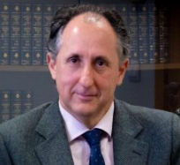

Jesús Ramos Prieto
Doctor con premio extraordinario por la UPO, de cuyo Departamento de Derecho Público fue Director (2012–2020). Autor de más de 140 publicaciones y miembro de más de veinte proyectos de investigación.
Leer biografía completa
Doctor en Derecho con premio extraordinario por la Universidad Pablo de Olavide de Sevilla, desde 2017 es Catedrático de Derecho Financiero y Tributario en dicha universidad, de cuyo Departamento de Derecho Público ha sido Director entre 2012 y 2020.
Autor de más de ciento cuarenta publicaciones (libros, capítulos de libro y artículos en revistas) y más de ciento cincuenta contribuciones a congresos, jornadas, seminarios y cursos nacionales e internacionales, ha sido miembro de más de veinte proyectos de investigación, dirigiendo en fechas recientes los Proyectos "Desafíos tributarios en el nuevo contexto europeo e internacional: economía digital y mercado interior" (Ministerio de Universidades) y "Retos actuales de la tributación indirecta en España y Europa" (Programa Operativo FEDER Andalucía 2014-2020).
Forma parte de la Escuela Europea de Estudios Tributarios Avanzados de Bolonia, de la Red de Profesores de Derecho Financiero y Tributario, de la Asociación Española de Derecho Financiero (AEDEF) y de la Asociación Española de Asesores Fiscales (AEDAF), en la que integró de febrero de 2021 a febrero de 2024 el Grupo de Expertos sobre Haciendas Locales y Catastro.